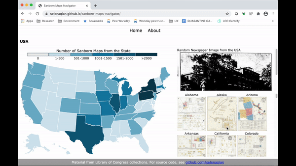
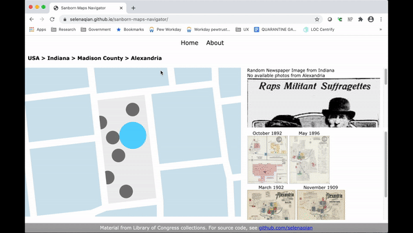

×
Welcome to the Sanborn Maps Navigator!
The Sanborn maps collection consists of over 50,000 historical maps, with around 32,000 of them currently available online. Click to explore the different places and discover more about the history with randomly selected historical newspaper photos from the area!

Click on different areas of the map to see updated results.

❮
❯
Click on the path to backtrack. Also, you can click on the photos and text instead of the map.